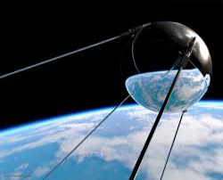

LA TERZA RIVOLUZIONE INDUSTRIALE
Dopo la seconda guerra mondiale si sono susseguite una serie di scoperte e invenzioni tecnologiche che hanno radialmente cambiato la vita nel mondo.
Questo progresso tecnologico viene chiamato Terza Rivoluzione industriale.
In questo periodo la ricerca e lo sviluppo tecnologico divennero un settore principale della crescita economica, che segnò ancora di più gli squilibri tra paesi ricchi e paesi poveri.
L'avanzamento tecnologico avvi⊶ un nuovo sistema di produzione che eliminò quasi totalmente i sistemi basati su grandi concentrazioni di manodopera.
In questo modo la presenza umana iniziò a diminuire sia nella produzione che nell'erogazione dei servizi.
L'elettronica, la telematica e l'informatica sono i campi su cui è maggiormente incentrata la terza rivoluzione industriale.
L'elettronica studia l'impiego dell'elettricità per elaborare e trasmettere informazioni.
Il più grande passo avanti della storia di questo campo corrisponde all'invenzione del personal computer (1975), un apparecchio di piccole dimensioni alla portata di tutti.
Il primo vero computer fu l'Apple II, prodotto dall'Apple, che fu il primo computer a possedere un interfaccia grafica. Questo gli garanti molto successo nel mercato.
Negli ultimi anni la potenza e la velocità di calcolo dei PC si sono potenziate enormemente, e nello stesso tempo ne è stata ridotta la grandezza.
La diffusione dei PC è aumentata considerevolmente dopo l'avvento di Internet, una rete globale di computer collegati tra loro in tempo reale.
In molti tipi di macchina ( dall'automobile, alla lavatrice, dai robot industriali alle serre agricole) sono stati montati microprocessori che eseguono azioni ripetitive preordinate attraverso un linguaggio informatico.
La seconda rivoluzione industriale era caratterizzata da un uso analogico dell'elettronica mentre la terza rivoluzione industriale è segnata dall'elettronica digitale, una delle conseguenze più immediate di questa rivoluzione è stato il passaggio dal disco in vinile al CD.
Un'altra importante innovazione è l'introduzione della telematica.
Questo campo comprende telecomunicazioni e media.
Grazie alla telematica l'uomo comunica con le macchine a distanza attraverso un linguaggio digitale.
Questo ha reso anche possibile il telecontrollo e il telelavoro.
Infine l'informatica è l'insieme degli studi incentrati sull'informazione e sulla sua trasmissione.
Questi tre grandi settori hanno contribuito e continueranno a contribuire non solo all'evoluzione tecnologica, ma anche al cambiamento radicale del nostro modo di vivere.
Oltre allo sviluppo del personal computer si sono sussegiute altre scolperte e rivoluzioni che cambieranno la nostra vita.
Lo sfruttamento dell'atomo significa la liberazione di un'energia immensa, ma per la prima volta l'umanità ha avuto la possibilità di distruggere completamente se stessa e il pianeta su cui vive.
L'uomo è sceso sulla Luna. La Terra di colpo è diventata piccola. Grazie ai satelliti possiamo assistere in diretta a fatti nel momento stesso che accadono a migliaia di chilometri di distanza.

Dopo il lancio del primo Sputnik sovietico, nel 1957, ha inizio l'invio nello spazio di satelliti con funzioni scientifiche e civili anzichè militari.
Nel 1960 gli Stati Uniti lanciano il primo satellite meteorologico, il Tiros I, con lo scopo di trasmettere alla terra dati riguardanti i movimenti nuvolosi attorno al pianeta ed eventuali cicloni.
L'uso dei satelliti (il primo, l'Echo I, viene lanciato nel 1960) risolve il problema delle telecomunicazioni.
Sono strumenti collocati in orbita geostazionaria e funzionano da ripetitori per segnali radio televisivi e telefonici.
La cultura di massa è nata con la seconda rivoluzione industriale.
Con la terza però ha invaso tutto il pianeta. Ora il mondo è un vilaggio globale, dominato dallo schermo televisivo.
Dopo decenni di sperimentazioni da parte di èquipe scientifiche di vari Paesi (principalmente Stati Uniti, Gran Bretagna e alcuni ricercatori di origine russa), nel novembre 1936 all'Alexandra Palace di Londra si inaugura la prima trasmissione televisiva quotidiana della BBC.
Negli Stati Uniti la televisione fa la sua prima comparsa pubblica nell'aprile del 1939 all'Esposizione Universale di New York.
Tra il 1954 e il 1956 altri diciannove paesi, fra i quali l'Italia, avviano la loro programmazione televisiva.
Il colore fa la sua comparsa in America fin dal 1952 mentre in Europa i tempi sono molto più lunghi.
Nel 1962, con il satellite americano Telestar, si rende possibile realizzare trasmissioni in diretta destinate all'intero pianeta.
Ultimamente si è sviluppata la qualità HD dei televisori e si stanno sviluppando anche i televisori in 3D.
Un'altra novità degli anni sessanta è il videoregistratore amatoriale, che permette di registrare su nastro direttamente dall'apparecchio televisivo i programmi trasmessi.
Il primo modello di telefono cellulare, vale a dire in grado di trasmettere il segnale senza passare attraverso la linea a terra, viene testato nel 1978. Nella seconda metà degli anni ottanta i telefonini cominciano ad essere prodotti e commercializzati.
In Italia sono messi in vendita nel 1990.
Nel lasso di tempo tra il 1994 e il 1997 il numero di abbonati al mondo quasi si triplica.
Aumenta, al contempo, l'evoluzione tecnologica. I nuovi telefoni cellulari sono di dimensioni sempre più ridotte, sono sempre più potenti e ricchi di accessori: dalla segreteria telefonica ai messaggi scritti, dal fax alla possibilità di collegarsi a Internet.
Il grande cambiamento che ha generato la terza rivoluzione industriale è straordinario.
Negli anni 50 non credo che le persone avrebbero mai pensato che strumenti come la televisione o l'automobile sarebbero stati beni accessibili a tutti, e inoltre non si sarebbero mai immaginati di comunicare ovunque si trovino attraverso un cellulare.